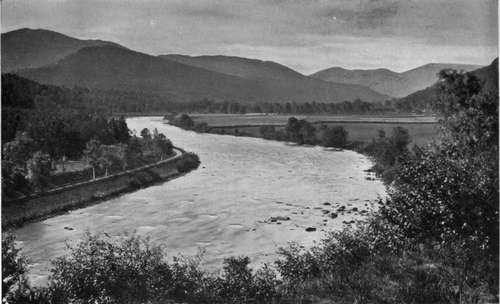

Chapter VII. Scotland
Description
This section is from the book "Salmon Fishing", by W. Earl Hodgson. Also available from Amazon: Salmon Fishing.
Chapter VII. Scotland
Dee - Don-Deveron-Ugie - Nairn - Findhorn - Spey - Beauly-Spean-Lochy-Moidart-Ness-Loch Ness- Waters of the Hebrides-Ullapool-Carron-Cannaird- Oiskaig-Polly-Alness-Conon-Berriedale and Lang-well-Helmsdale-Borgie-Naver- Halladale-Hope- Loch Hope-Strathmore-Kinloch-Loch Naver-Fleet -Carnach-Brora-Inchard-Laxford-Stack-Inver- Kir kaig-Th urso-Orch y-Awe-Baa- Dh u-Shira- Aray-Barr-Etive-Shiel-Loch Tay-The Tay-Loch Lubnaig-Teith-Voil-Doine-Clyde-Leven - Loch Lomond-Cree and Minnoch-Stinchar-Luce-Girvan -Nith-Cairn-Annan-Tweed-Teviot-South Esk -North Esk-Charters.
His Majesty the King has long stretches of the Dee, and I have gracious permission, conveyed by Lord Knollys, to give an account of the river as it is known to those who fish in the neighbourhood of Balmoral and Abergeldie.
Mr. Arthur P. Grant, Head Stalker at Balmoral, who has had duty on the waters for forty years, writes:-
" Until four years ago we had a bad year occasionally, but could generally reckon on a good year following an indifferent or a poor one. For four years, however, the fishing has gone from bad to worse. Last season's was undoubtedly the least satisfactory I have experienced. I do not think that this is caused by any diminution in the numbers of fish entering the river: during the same period sport on many of the lower reaches of the river has been very good. It seems rather to be owing to the fact that the fish do not proceed to the upper reaches as early or in as large numbers as they used to do. It would be difficult to assign a reason for this; but I may make a conjecture, and one more expert in the 'habits and instincts of fishes' may be able to say if there is anything in it.
" For years past hundreds of fish have been taken from the upper reaches and stripped of spawn, which is removed to the hatcheries lower down; the fry are restored to the lower reaches. What I should like to know is whether salmon thus reared would have a tendency on their annual visit to haunt the pools where they spent their days as fry, and not to push on to upper reaches of the river. If this is so, it might account for the scarcity of fish in the upper waters in spring. Last year-for the first time, I believe-some of the fry were restored to the upper reaches; but time alone can show whether this is to have any effect.
"What fish are in the water are much more difficult to take now than formerly. This may be accounted for by the consideration that during their leisurely progress from pool to pool they have again and again presented to them every possible lure."
The Deb Near Balmoral - G. W. Wilson and Co.
Writing in more general terms, Mr. John Michie, M.V.O., His Majesty's Agent at Balmoral, says:-
"It would be risky to state that the number of salmon entering the river has diminished or sport generally deteriorated in recent years; but certain it is that for the last four seasons fish have not run up to the higher reaches, above Ballater, so early as they frequently did in previous years, while there have been more fish in the middle and lower reaches.
" The cause of this is probably not clear; but I am inclined to think that the practice of taking spawn from fish in the upper streams, hatching it artificially, and putting the smolts into the river low down, has a tendency in that direction. It ought to be mentioned, however, that some of those artificially reared smolts have been taken up to higher tributaries. What proportion of them ever reach the mouth of the river it would be difficult to say, or even to guess at.
" I am no believer in artificial rearing of young salmon. Spawning fish, in my opinion, should be left undisturbed on the natural spawning beds. There should be no interference beyond careful protection of the fish, and, perhaps, improvement of the beds at some other time than the spawning season.
" I believe there is very little poaching-except, perhaps, the taking of a few fish from spawning streams; but these are supposed to be pretty well watched.
" The Dee, I believe, is very free of pollution above Banchory. The Town Council of Aberdeen look well after the river above that point, for the sake of the purity of the town water.
"Hill drainage is of so small extent about and above Balmoral that it cannot appreciably affect the flow of the river to produce sudden flooding in times of rain or half-dry channels in protracted drought, as is the case in some rivers.
" Any record that may be kept of salmon caught on the Balmoral water would be of no use from a statistical point of view : angling is intermittent."
Of the Mar and the Glen Dee waters, Mr. William Macintosh, the Agent at Banff, by desire of the Duke of Fife, writes :-
"I have now heard from Ronald M'Donald, Head Forester at Mar, with reference to your inquiry. M'Donald, who speaks only for the upper reaches of the Dee, is of opinion that there is very little difference in the catch of salmon during the last fifteen years. He thinks the salmon are rather later in coming up the river. From the end of March, however, the river seems as well stocked as it was fifteen or sixteen years ago."
Of the river as a whole Mr. Alexander Copland, Aberdeen, who has been studiously familiar with it for sixty years, writes :-
"The Dee has its sources in the Cairngorm Mountains, and, after a course of about eighty-five miles, falls into the North Sea at Aberdeen. The salmon fishings in the river and its tributaries, and on the sea coast adjoining, are important and valuable. The rod fishing during the past thirty years has greatly improved, and the Dee is now one of the finest rivers in Scotland. This result has been achieved in large measure by the sagacious policy of the owners of the fishings, who combined in 1872 to form a voluntary association for the purpose of renting and withdrawing the nets formerly used in the river from Banchory Ternan, about eighteen miles from Aberdeen, down to near the tidal waters, about three miles from the mouth. This arrangement secures a free passage for the fish, after they have left the tidal waters, to the streams and pools above and to the spawning beds all along the river, its tributaries, and upper reaches; whereas formerly fish that during the weekly close time had passed the lower net fishings were captured between the tidal waters and Banchory by the many nets. The Dee District Board, impressed with the necessity of guarding the river from pollution and poaching, give close attention to these and all other matters that affect the increased prosperity of the fishings.1"
Continue to:
Tags
salmon, fish, river, fishing, trout, loch, flies, fishing flies